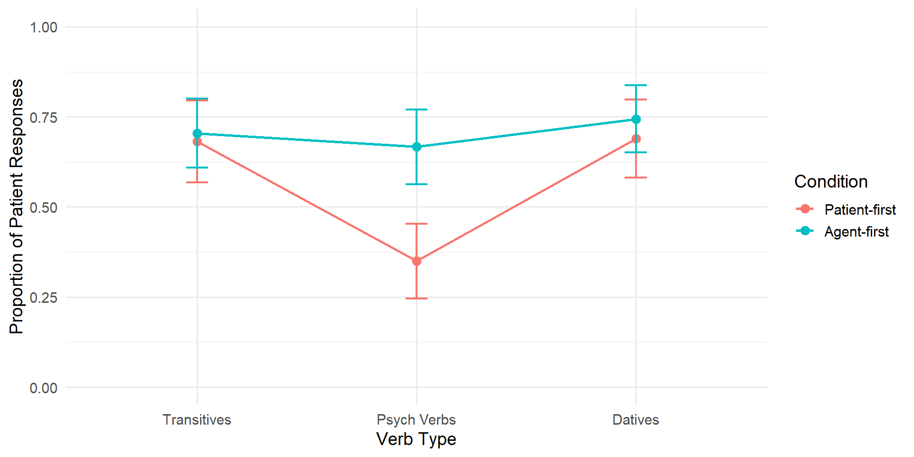

| patient | |||
|---|---|---|---|
| Predictors | Odds Ratios | CI | p |
| (Intercept) | 1.95 | 1.31 – 2.89 | 0.001 |
| N participant | 25 | ||
| N item | 24 | ||
Proto-Patient Bias and
Predictive Discourse Processing in Korean
AELLK
Kunsan National University
2026-05-30
Garvey et al. (1974):
Crinean & Garnham (2006):
Stevenson et al. (1994)
Proto-patients (Dowty, 1991)
Ahn (2025):
Topic Shifted
어제 저녁에 정미는 유나에게 폭력적인 남자 친구에 대해 털어놓았다.
Topic Continued
어제 저녁에 정미는 유나의 폭력적인 남자 친구에 대해 알게 되었다.
a. 정미가 (유나가) 걱정스러웠는지 헤어지라고 충고했다.
b. (정미가) 유나가 걱정스러웠는지 헤어지라고 충고했다.
agent-patient
강민이가 호영이를 때렸다.
patient-agent
강민이가 호영이한테 맞았다.
source-goal
명준이가 준성이에게 파티 초대장을 보냈다.
goal-source
명준이가 준성이에게 파티 초대장을 받았다.
stimulus-experiencer
승준이가 재민이를 무섭게 한다.
experiencer-stimulus
승준이가 재민이를 무서워 한다.
강민이가 호영이를 때렸다.
호영이는 참지 않고, 강민이를 한 대 더 때려주었다: patient
강민이는 나빴다: agent
강민이가 호영이한테 맞았다.
강민이가 맞을 짓을 했다: patient
호영이는 죄책감이 들었다: agent
명준이가 준성이에게 파티 초대장을 보냈다.
명준이가 준성이에게 파티 초대장을 받았다.
Responses
Logistic mixed effects modeling
participant and item intercepts only
Overall patient response model: patient ~ 1 + (1|participant) + (1|item)
Accuracy model: accuracy ~ 1+condition*type+(1|participant)+(1|item)
patient ratio model: patient~1+condition*type+(1|participant)+(1|item)
R version 4.6.0 (2026-04-24)
lmerTest
| patient | |||
|---|---|---|---|
| Predictors | Odds Ratios | CI | p |
| (Intercept) | 1.95 | 1.31 – 2.89 | 0.001 |
| N participant | 25 | ||
| N item | 24 | ||
| Responses | Count | Percentage |
|---|---|---|
| Agent-related | 172 | 36.2 |
| Patient-related | 303 | 63.8 |

| Estimate | SE | z | p | |
|---|---|---|---|---|
| Intercept | 0.863 | 0.324 | 2.666 | 0.008 |
| Condition (Agent-first) | 0.107 | 0.371 | 0.288 | 0.773 |
| Psych Verbs | -1.534 | 0.393 | -3.902 | 0.000 |
| Dative Verbs | 0.028 | 0.404 | 0.069 | 0.945 |
| Condition × Psych | 1.318 | 0.510 | 2.582 | 0.010 |
| Condition × Dative | 0.224 | 0.525 | 0.426 | 0.670 |
| Estimate | SE | z | p | |
|---|---|---|---|---|
| Intercept | -1.689 | 0.471 | -3.589 | 0.000 |
| Condition (Agent-first) | -3.168 | 0.813 | -3.897 | 0.000 |
| Psych Verbs | -3.148 | 0.860 | -3.663 | 0.000 |
| Dative Verbs | -0.211 | 0.483 | -0.436 | 0.663 |
| Condition × Psych | 4.798 | 1.187 | 4.043 | 0.000 |
| Condition × Dative | -0.455 | 1.322 | -0.344 | 0.731 |
Ahn (2025)’s speculation:
Current study:
Ahn, H. (2025). Null pronoun interpretation probed via thematic role ambiguity: a case in Korean. Linguistics Vanguard, 11(1), 231–246. https://doi.org/10.1515/lingvan-2025-0065
Crinean, M., & Garnham, A. (2006). Implicit causality, implicit consequentiality and semantic roles. Language and Cognitive Processes, 21(5), 636–648. https://doi.org/10.1080/01690960500199763
Dowty, D. (1991). Thematic proto-roles and argument selection. Language, 67(3), 547–619.
Garnham, A., Vorthmann, S., & Kaplanova, K. (2021). Implicit consequentiality bias in English: A corpus of 300+ verbs. Behav Res Methods, 53(4), 1530–1550. https://doi.org/10.3758/s13428-020-01507-z
Garvey, C., & Caramazza, A. (1974). Implicit causality in verbs. Linguistic Inquiry, 5(3), 459–464.
Kim, H., & Chun, E. (2023). Effects of topicality in the interpretation of implicit consequentiality: evidence from offline and online referential processing in Korean. Linguistics, 61(1), 77–105. https://doi.org/10.1515/ling-2020-0197
McKoon, G., Greene, S. B., & Ratcliff, R. (1993). Discourse models, Pronoun resolution, and the implicit causality of verbs. Journal of Experimental Psychology: Learning, Memory and Cognition, 19(5), 1040–1052.
Solstad, T., & Bott, O. (2022). On the nature of implicit causality and consequentiality: the case of psychological verbs. Language, Cognition and Neuroscience, 37(10), 1311–1340. https://doi.org/10.1080/23273798.2022.2069277
Stevenson, R. J., Crawley, R. A., & Kleinman, D. (1994). Thematic roles, focus and the representation of events. Language and Cognitive Processes, 9(4), 519–548. https://doi.org/10.1080/01690969408402130
Stewart, A. J., Pickering, M. J., & Sanford, A. J. (1998). Implicity consequentiality. In Proceedings of the twentieth annual conference of the cognitive science society (pp. 1031–1036). Routledge.